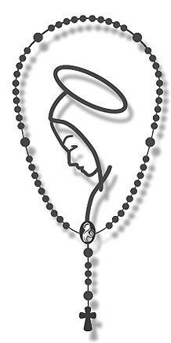

Esta palabra la manda Dios para ti.
Que estas palabras te guíen y consoliden tu fe cada día.
Pulsa "Obtener Palabra" para recibir una palabra de vida.
Oración del Día
Señor, guíame con tu luz en este día y hazme instrumento de tu paz.
Su Santidad, el Papa Leon XIV, Pastor de la Iglesia y mensajero de paz.

Los últimos cinco papas de la Iglesia
La Fe
La fe es la creencia en Dios y en su poder para hacer lo que dice.
Contacto
Si deseas colaborar, sugerir una oración o enviar un testimonio, escribe a: palabradevida@example.com